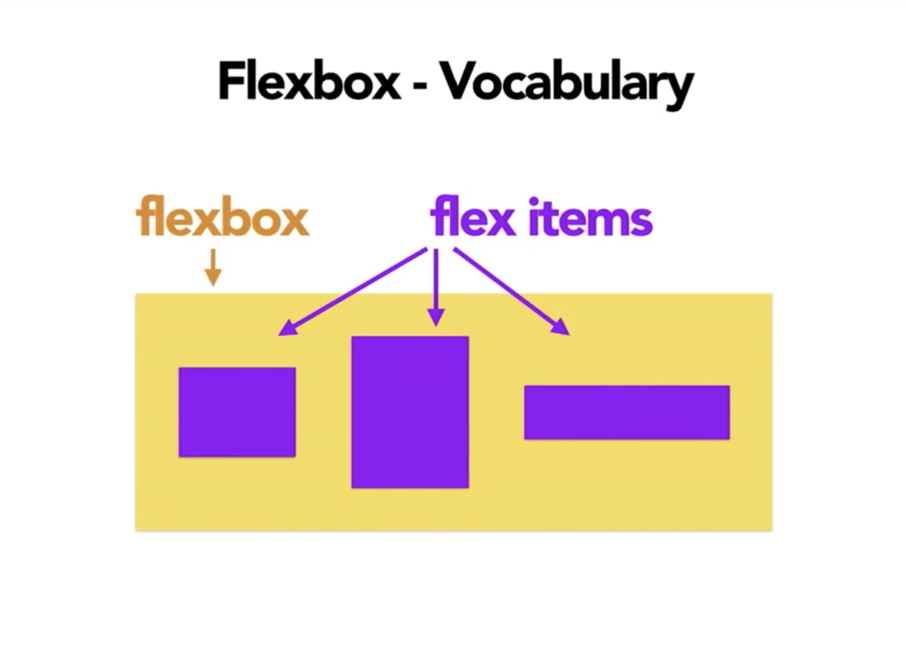

Introduction to
FlexBox
CSS Layouts I
Created by Kostas Minaidis

What is FlexBox?
According to the Specs:
A new layout mode, flex layout, optimized for user interface design. In the flex layout model, the children of a flex container can be laid out in any direction, and can “flex” their sizes, either growing to fill unused space or shrinking to avoid overflowing the parent.
How does it work?

display: flex;


display
.container { display: flex; }
.container { display: inline-flex; }
flex-direction

flex-direction
.container {
flex-direction: row;
flex-direction: row-reverse;
flex-direction: column;
flex-direction: column-reverse;
}
flex-wrap

flex-wrap
.container{ flex-wrap: nowrap; }
.container{ flex-wrap: wrap; }
.container{ flex-wrap: wrap-reverse; }
flex-flow
.container {
flex-flow: <flex-direction> <flex-wrap>;
}
justify-content

justify-content
.container { justify-content: flex-start; }
.container { justify-content: flex-end; }
.container { justify-content: center; }
.container { justify-content: space-between; }
.container { justify-content: space-around; }
.container { justify-content: space-evenly; }
align-items

align-items
.container { align-items: flex-start; }
.container { align-items: flex-end; }
.container { align-items: center; }
.container { align-items: baseline; }
.container { align-items: stretch; }
align-content

align-content
.container { align-content: flex-start; }
.container { align-content: flex-end; }
.container { align-content: center; }
.container { align-content: space-between; }
.container { align-content: space-around; }
.container { align-content: stretch; }
align-items vs. align-content
Interactive Demo TimeMeet the Children...
...properties
order

order
.item { order: <integer>; }
/* default is 0 */
flex-grow

flex-grow
.item { flex-grow: <number> }
/* default 0 */
flex-shrink
flex-shrink
.item { flex-shrink: <number> }
/* default 1 */
flex-basis
flex-basis
.item { flex-basis: <length> | auto; }
/* default auto */
flex
flex
.item {
flex: <flex-grow> <flex-shrink> <flex-basis>
}
align-self

align-self
.item { align-self: auto; }
.item { align-self: flex-start; }
.item { align-self: flex-end; }
.item { align-self: center; }
.item { align-self: baseline; }
.item { align-self: stretch; }
Resources - Part I:
- FlexBox in 5 Minutes
- CSS-Tricks: A Complete Guide to Flexbox
- FlexBox Cheatsheet
- List of all FLEXBOX Layout properties
- CSS FlexBox YouTube Playlist by NetNinja
- UNDERSTANDING FLEXBOX: EVERYTHING YOU NEED TO KNOW
- FLEXBOX FROGGY
- FLEXBOX PLAYGROUND
- FLEXBOX CSS IN 20 MINUTES
- FlexBox by Codrops
- SOLVED BY FLEXBOX
Resources - Part II:
- How to Create a Flawless Responsive Post Grid with Flexbox
- The Complete Illustrated Flexbox Tutorial
- BASIC CONCEPTS OF FLEXBOX, MDN
- THE 4 (PRACTICAL) FLEXBOX TRICKS YOU NEED TO KNOW
- ALIGNING ITEMS IN A FLEX CONTAINER
- CREATE A MOBILE APP LAYOUT WITH FLEXBOX!, Wes Bos
- ORDERING FLEX ITEMS
- MASTERING WRAPPING OF FLEX ITEMS
- CONTROLLING RATIOS OF FLEX ITEMS ALONG THE MAIN AXIS
- TYPICAL USE CASES OF FLEXBOX
Resources - Part III:
- Flexbox — The Animated Tutorial
- The Complete CSS Flex Box Tutorial
- Scrimba: Learn Flexbox for free
- CSS FLEXBOX ESSENTIALS, DevTips
- FINALLY UNDERSTANDING FLEXBOX FLEX-GROW, FLEX-SHRINK AND FLEX-BASIS!
- WHAT ARE THE DIFFERENCES BETWEEN FLEX-BASIS AND WIDTH? [SO]
- DIVE INTO FLEXBOX
- CREATE A RESPONSIVE WEBPAGE WITH FLEXBOX
- AN EXERCISE USING CSS FLEXBOX | LEARN TO CREATE LAYOUTS USING CSS | LEARN CSS | FLEXBOX TUTORIAL
- HOW TO CREATE A RESPONSIVE NAVIGATION WITH FLEXBOX AND CSS GRID AND A NO JS DROPDOWN
- Building layouts with flexbox and CSS grids